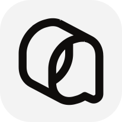

磨砂玻璃方案稿
E 融合
A 窗影
B 空间窗景
C 午夜线路
D 轻雾玻璃
首页
日程待办
导航收起
导航展开
AI 栏开
AI 栏关
上午光
午后光
傍晚光
日程
11月14日 周六
14:00–15:00
项目设计评审
待办
1/7
逾期 1
O
Ono的看板
11月14日 周六 · 下午好，Ono
添加卡片
编辑布局
待办摘要
近7天 · 按计划日期
已完成 12
待办 6
1
日
3
一
2
二
2
三
1
四
3
五
6
今
专注计时
25:00
专注一件事
开始专注
每日签到
WorkBuddy
本轮已领取

Qoder
待签到
TRAE CN
未连接
AI 额度
Codex
72
%
5 小时
Z Code
88
%
本周
Cursor
41
%
本月
Grok Bot
未连接
日程待办
今天已完成
1
项，还有
6
项待办 ·
逾期 1 项
新增
日程
日
周
2026年11月14日
一
9
二
10
三
11
四
12
五
13
六
14
日
15
今天的日程
2 项
项目设计评审
进行中
14:00–15:00
同步本周安排
16:00–16:30
明天 11月15日 · 需求评审 10:00–11:00
待办
6
全部事项
补齐昨日会议纪要
已超期
工作
11/13 18:00
整理本周工作计划
工作
今天 18:00
核对项目需求与交付清单，补充边界条件
工作
65%
今天 18:00
完成第一篇博客编写
自媒体
今天 20:00
准备下周沟通提纲
工作
今天 21:00
整理学习资料
无标签
今天 21:30

 Codex72%5 小时
Codex72%5 小时 Cursor41%本月
Cursor41%本月